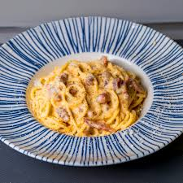

Carbonara

Discription
A creamy, rich Italian pasta dish made with eggs, cheese, crispy pancetta (or bacon), and black pepper. No cream—just silky egg sauce coating the pasta!
Ingredients
- 500g spaghetti, No6
- salt
- pepper
- 150g guanciale
- 1 tablespoon butter
- 1 egg
- 4 egg yolks
- 100g parmesan cheese
Steps
- In a pot with boiling water add salt, the spaghetti, and boil according to the packet's instructions.
- Place a frying pan on heat and let it get very hot.
- Cut the guanciale into small pieces and add them to the hot frying pan.
- Add the butter and sauté until golden.
- In a bowl add the egg, the yolks, pepper, a little salt, and whisk well with a hand whisk.
- With a ladle, take about 150 g of the water where the pasta is boiling and add it slowly into the bowl with the eggs, by whisking constantly.
- Drain the pasta, add it to the frying pan with the guanciale, and mix. Add the egg mixture, remove from the heat, and mix.
- Serve right away with pepper and grated pecorino.
Home